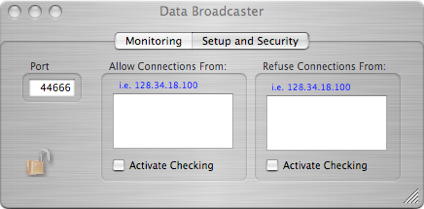
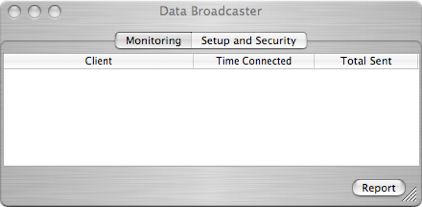

Broadcaster



The Broadcaster is a BSD socket object that can stream the raw data stream to remote clients. The data stream is exactly the same as the data put on disk. If a client connects while a run is already in progress, the client will receive the data header, and data parameters, but will lose data up to the time at which the connection is made.
Print current connection information to the status window
The only setup for the dispatcher is to pick a port number for remote clients to connect to. Usually the default port is OK. In addition, one can restrict the connections to the broadcaster to a set of IPs or exclude certain IPs from connecting. Also the broadcaster only allows one connection for each IP.
Displays the connected computer and program, time and date of connection, and total data sent for this run
NCDBuilder - g5builder.sno.lauren 17:07:07 14,323,256
Enter IP of allowed computers -- active only when checked.
Port used for broadcaster connections
Enter IP of computers that may NOT connect -- active only when checked.